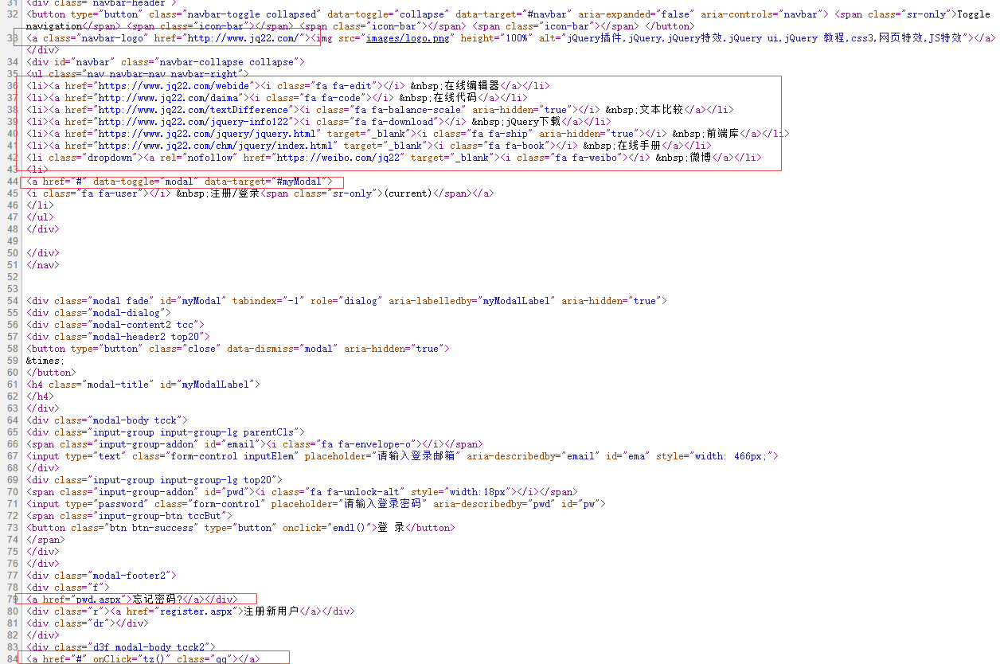
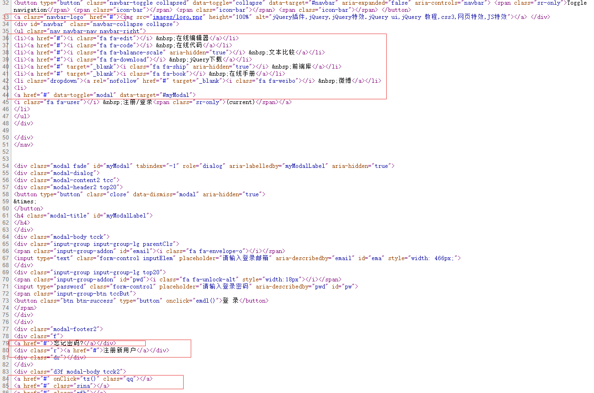

转载出处：http://www.luanxin.top/index.php/archives/21/
仿站的时候扒下来的代码a链接总是指向别的地方，要一个一个改的话都要累死了，展示的时候随便点一下就乱跳，很烦，于是想用php写一个能改变a链接href属性的代码，代码如下：
<?php // 替换a标签中的href属性值
function a_replace_href($str) {
$preg = '/href=(\"|\')(.*?)(\"|\')/i';
$replacestr = 'href="#"';
$res = preg_replace($preg, $replacestr, $str);
return $res;
}
// 获取字符串中的所有a标签
function from_str_get_a($str){
$preg = '/<a .*?>/i';
preg_match_all($preg, $str, $imgArr);
return $imgArr[0];
}
$str = file_get_contents("index.html");
$data = from_str_get_a($str);//获取字符串中的a标签
$data1 = a_replace_href($data);//替换后应该显示的a标签
$res = $str;
// 反复对字符串进行查找替换
foreach ($data as $key => $value) {
$res = str_replace($value,$data1[$key],$res,$i);
}
// 另存文件
file_put_contents("index1.html",$res);
?>
原理就是采用正则匹配然后替换，如果你们有更好的想法或优化欢迎留言评论，分享一下您的心得！
测试效果如下：
源文件代码：

替换后文件代码：
